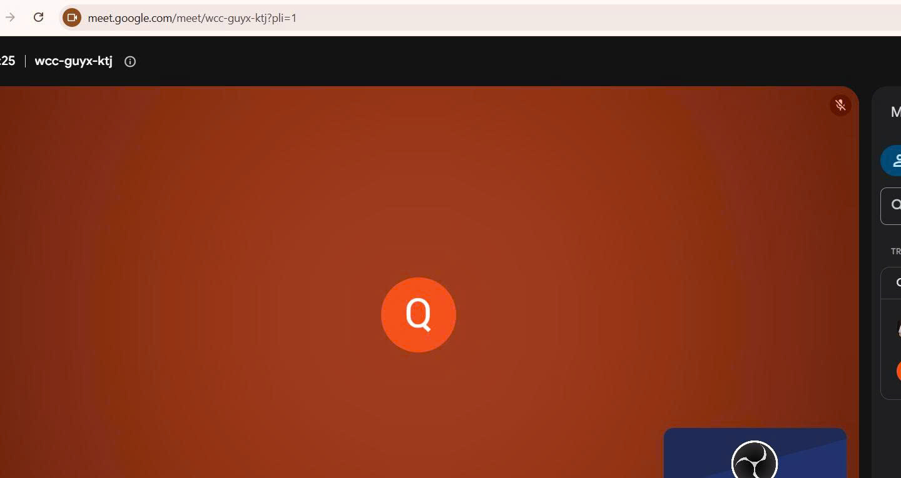

Bài 4 · Chương 4: Giao tiếp và hợp tác trong môi trường số · Điểm tối đa 0,5
Bài 4: Sử dụng công cụ hợp tác trực tuyến cho dự án nhóm
a) Mục tiêu bài tập
Yêu cầu của bài tập: cùng nhóm chọn một chủ đề học thuật hoặc dự án; lên kế hoạch cuộc họp trực tuyến (chọn nền tảng, xác định mục tiêu và chương trình nghị sự, phân công vai trò, chuẩn bị tài liệu); tổ chức họp 20–30 phút và ghi lại khi có sự đồng ý của mọi thành viên; lập biên bản, tổng hợp quyết định và nhiệm vụ, chia sẻ kết quả; mỗi thành viên viết đánh giá ngắn.
Kỹ năng được rèn luyện: tổ chức và tham gia họp trực tuyến chuyên nghiệp, phân công trách nhiệm, ghi biên bản, quản lý công việc nhóm bằng công cụ trực tuyến (kết hợp Trello theo gợi ý của đề).
b) Tóm tắt quá trình thực hiện
Các bước thực hiện
- Nhóm thống nhất chủ đề dự án: thiết kế poster tuyên truyền "Sử dụng AI có trách nhiệm trong học tập" (có thể thay bằng chủ đề nhóm đã chọn).
- Chọn Google Meet vì miễn phí, chạy trên trình duyệt và dễ chia sẻ liên kết; dùng Trello để theo dõi nhiệm vụ.
- Xây dựng chương trình nghị sự 25 phút và phân công vai trò: điều phối, thư ký, người trình bày.
- Chuẩn bị tài liệu: bản phác thảo ý tưởng poster, bảng nhiệm vụ trên Trello, mẫu biên bản.
- Tổ chức họp, xin ý kiến đồng ý trước khi ghi hình, thảo luận và chốt quyết định.
- Sau họp: lập biên bản, cập nhật Trello, gửi tài liệu cho các thành viên; mỗi người viết đánh giá ngắn.
Công cụ đã sử dụng
- Google Meet (nền tảng họp)
- Trello (quản lý nhiệm vụ nhóm)
- Google Docs hoặc Google Drive (biên bản và tài liệu dùng chung)
- Claude (Anthropic): hỗ trợ soạn khung kế hoạch và biên bản
Khó khăn và cách giải quyết
| Khó khăn | Cách giải quyết |
|---|---|
| Khó thống nhất giờ họp vì lịch học khác nhau. | Dùng bình chọn trong nhóm chat và chọn khung giờ nhiều người rảnh nhất. |
| Cuộc họp dễ kéo dài lan man. | Điều phối viên giữ giờ theo từng mục, vấn đề chưa xong chuyển sang Trello thảo luận tiếp. |
| Quyết định không được ghi lại nên dễ quên. | Thư ký ghi trực tiếp vào biên bản chung và đăng nhiệm vụ lên Trello ngay sau họp. |
Khai báo sử dụng AI: Mình dùng Claude (Anthropic) để gợi ý khung kế hoạch và biên bản cuộc họp. Nội dung cuộc họp, các quyết định, phân công và phần đánh giá do nhóm và mình tự thực hiện.
c) Sản phẩm cuối cùng
a) Kế hoạch cuộc họp
| Nội dung | Chi tiết |
|---|---|
| Nền tảng | Google Meet; liên kết cuộc họp: https://meet.google.com/meet/wcc-guyx-ktj?pli=1 |
| Thời gian | 22h25 ngày 29/11/2026, thời lượng 25 phút |
| Thành viên | Nguyễn Hưng Nam, Nguyễn Văn A |
| Mục tiêu | Chốt ý tưởng, bố cục và phân công thực hiện poster "Sử dụng AI có trách nhiệm trong học tập" |
| Phân công vai trò | Điều phối: Nguyễn Hưng Nam; Thư ký: Nguyễn Văn A; Người trình bày: Nguyễn Hưng Nam |
| Tài liệu chuẩn bị | Phác thảo ý tưởng, bảng nhiệm vụ Trello, mẫu biên bản, bộ nguyên tắc dùng AI (từ Bài 6) |
| Thời gian | Nội dung | Phụ trách |
|---|---|---|
| 0–3 phút | Khai mạc, nhắc mục tiêu, xin ý kiến ghi hình | Điều phối |
| 3–8 phút | Báo cáo tiến độ chuẩn bị của từng người | Từng thành viên |
| 8–18 phút | Thảo luận ý tưởng, bố cục, thông điệp poster | Cả nhóm |
| 18–23 phút | Phân công nhiệm vụ và hạn hoàn thành | Điều phối, thư ký |
| 23–25 phút | Tổng kết, nhắc lại quyết định, hẹn buổi sau | Người trình bày |

b) Biên bản cuộc họp
| Mục | Nội dung |
|---|---|
| Thời gian, địa điểm | 22h25 đến 22h50 ngày 29/11/2026; họp trực tuyến trên Google Meet |
| Thành phần tham dự | Nguyễn Hưng Nam, Nguyễn Văn A. Có mặt đủ 2/2 thành viên, không có ai vắng. |
| Nội dung thảo luận | Thống nhất thông điệp chính; thảo luận hai phương án bố cục; rà soát quy định ghi rõ việc dùng AI |
| Quyết định | Chọn bố cục dọc, dùng bảng màu ấm thống nhất; thông điệp chính là "Dùng AI để hỗ trợ, không để thay thế"; thống nhất phân công và hạn hoàn thành từng việc; ghi rõ công cụ AI đã dùng trên sản phẩm. |
| Nhiệm vụ | Người phụ trách | Hạn hoàn thành |
|---|---|---|
| Tìm tư liệu và số liệu cho poster | Nguyễn Văn A | 9h00 ngày 30/11/2026 |
| Soạn nội dung chữ | Nguyễn Hưng Nam | 10h00 ngày 30/11/2026 |
| Thiết kế bản nháp poster | Nguyễn Hưng Nam | 9h00 ngày 01/12/2026 |
| Rà soát nguồn ảnh, ghi chú việc dùng AI | Nguyễn Văn A | 10h00 ngày 01/12/2026 |

Biên bản và tài liệu được chia sẻ giữa hai thành viên qua Google Drive, nội dung đầy đủ của biên bản nằm ngay trong trang này.
c) Cách thức phối hợp trực tuyến
- Kênh trao đổi nhanh: nhóm chat; họp chính thức: Google Meet.
- Theo dõi việc: Trello với 3 cột Cần làm, Đang làm, Hoàn thành.
- Tài liệu chung: Google Drive, đặt tên tệp theo quy tắc ở Bài 1.
- Quy tắc họp: vào đúng giờ, tắt micro khi không nói, chỉ ghi hình khi mọi người đồng ý.
d) Đánh giá cá nhân về hiệu quả cuộc họp
Cuộc họp diễn ra đúng kế hoạch và hoàn thành tốt mục tiêu đã đề ra: cả hai thành viên đều có mặt, thảo luận tập trung và chốt được ý tưởng, bố cục cho poster. Nội dung công việc được phân chia đầy đủ, rõ người, rõ hạn nên không bị chồng chéo. Mình làm điều phối nên giữ giờ theo từng mục, nhờ vậy cuộc họp không bị kéo dài. Điều làm tốt là Nguyễn Văn A ghi biên bản kịp thời, các quyết định được cập nhật ngay lên Trello. Điều chưa tốt là lúc đầu nhóm mất vài phút chỉnh âm thanh và kết nối nên hơi hụt thời gian. Mình đề xuất lần sau thử thiết bị trước giờ họp 5 phút và gửi trước nội dung cần thảo luận để họp nhanh hơn.